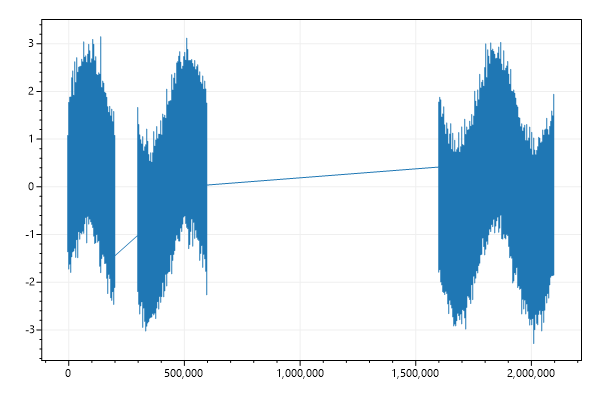
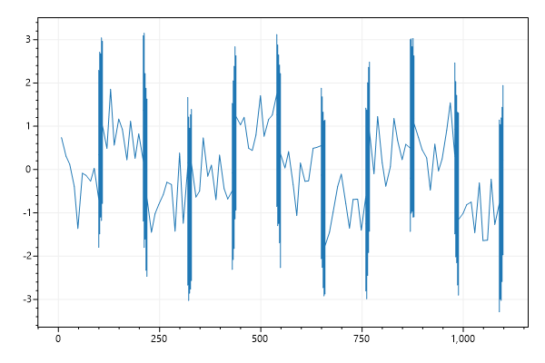

ScottPlot Cookbook: Plottable - SignalXY
⚠️ Documentation is version-specific: This page was generated forScottPlot 4.1.4-beta
Additional documentation and more version-specific cookbooks are on the ScottPlot Website
SignalXY Quickstart
SignalXY is a speed-optimized plot for displaying vaues (Ys) with unevenly-spaced positions (Xs) that are in ascending order. If your data is evenly-spaced, Signal and SignalConst is faster.var plt = new ScottPlot.Plot(600, 400);
// generate random, unevenly-spaced data
Random rand = new Random(0);
int pointCount = 100_000;
double[] ys = new double[pointCount];
double[] xs = new double[pointCount];
for (int i = 1; i < ys.Length; i++)
{
ys[i] = ys[i - 1] + rand.NextDouble() - .5;
xs[i] = xs[i - 1] + rand.NextDouble();
}
plt.AddSignalXY(xs, ys);
plt.SaveFig("signalxy_quickstart.png");

Signal Data with Gaps
Signal with defined Xs that contain gapsvar plt = new ScottPlot.Plot(600, 400);
Random rand = new Random(0);
int pointCount = 1_000_000;
double[] sine = DataGen.Sin(pointCount, 3);
double[] noise = DataGen.RandomNormal(rand, pointCount, 0, 0.5);
double[] ys = sine.Zip(noise, (s, n) => s + n).ToArray();
double[] xs = Enumerable.Range(0, pointCount)
.Select(x => (double)x)
.Select(x => x > 500_000 ? x + 1_000_000 : x)
.Select(x => x > 200_000 ? x + 100_000 : x)
.ToArray();
plt.AddSignalXY(xs, ys);
plt.SaveFig("signalxy_gaps.png");

Different Densities
Signal with mised low and high density datavar plt = new ScottPlot.Plot(600, 400);
Random rand = new Random(0);
int pointCount = 1_000_000;
double[] sine = DataGen.Sin(pointCount, 3);
double[] noise = DataGen.RandomNormal(rand, pointCount, 0, 0.5);
double[] ys = sine.Zip(noise, (s, n) => s + n).ToArray();
double[] xs = new double[pointCount];
double currentX = 0;
for (int i = 0; i < pointCount; i++)
{
if ((i % 100000) < 10)
currentX += 10;
else
currentX += 0.0001;
xs[i] = currentX;
}
plt.AddSignalXY(xs, ys);
plt.SaveFig("signalxy_density.png");
